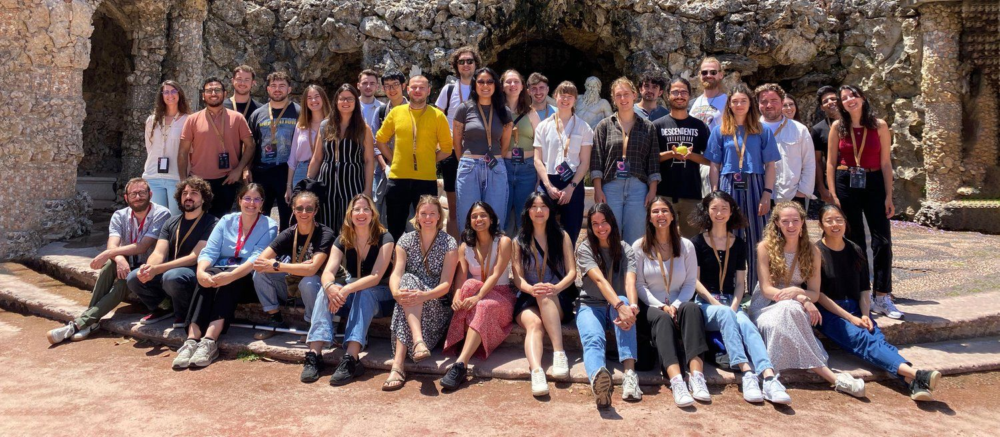

Overview
The first Optical Biology PhD Student Retreat was held in Lisbon on 16–19 June 2024, organised by students from the Optical Biology PhD programme at University College London in collaboration with the Instituto Gulbenkian de Ciência and the Champalimaud Centre for the Unknown.
The retreat combined keynote lectures, facility tours, student lightning talks, poster sessions and roundtable discussions, with an emphasis on training, informal networking and hands-on exposure to imaging facilities available across the host institutes.
Keynote lectures
- Prof. Rita Fior — Zebrafish Avatars for Personalized Medicine - bringing bench-side cancer drug screening results to patients
- Prof. Michael Orger — Imaging Structure and Function in the Larval Zebrafish Brain - multi-scale in-house imaging approaches
- Prof. Ricardo Henriques — Advances in super-resolution microscopy and tools for robust microscopy analysis - roundtable on reproducibility and deep-learning methods
Activities & highlights
- Facility talks and tours: group leaders from campus imaging facilities presented local setups and collaborative EuroImaging resources.
- Poster sessions took place in the tropical gardens at Champalimaud — lively discussion and constructive feedback in a relaxed setting.
- Student “blitz talks” (short presentations) at Instituto Gulbenkian de Ciência covered diverse topics from population genetics to mechanochemical signalling and advanced imaging systems.
- Roundtable discussions and long coffee breaks allowed students to meet the keynote speakers and facility leaders informally.
Why it mattered
The retreat provided an early-career forum to practise presentation skills, exchange technical know-how about imaging platforms, and build connections across institutions. It also strengthened links between students and facility staff through hands-on tours and practical discussions.
Photo
Group photo from Lisbon 2024:
Short programme
- Day 1 — Welcome & keynote lectures
- Day 2 — Facility talks, student talks & poster sessions
- Day 3 — Lab tours, roundtables, and networking